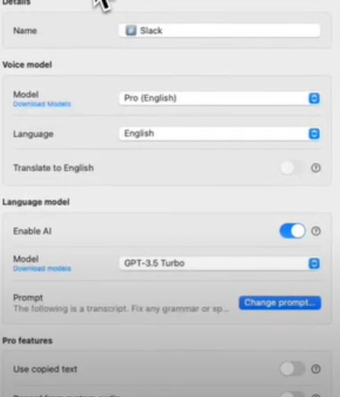
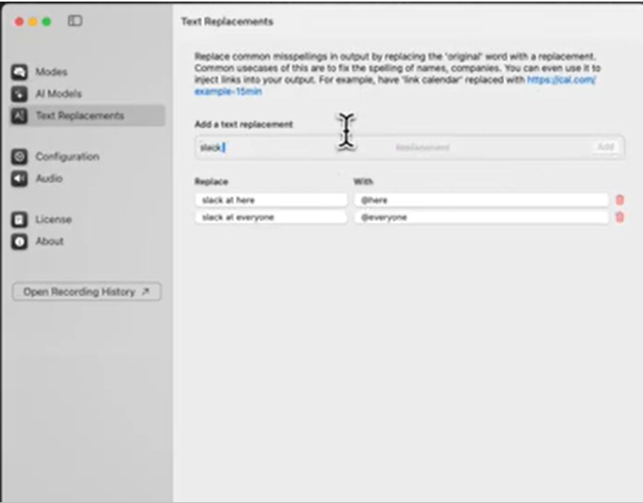

Building Slack Mentions
Introduction
The most likely reason why you have been brought here is to probably see how a messaging mode can go beyond everyday texting.
A good way to demonstrate Superwhisper’s messaging abilities is by using Slack.
You do not even need to type the username to ping!
Below is how a messaging mode can be set up for building slack mentions.
Steps



Try it Yourself
[Give some scenario]
Open up a chat with someone on Slack and write the appropriate response.
See if your response is formatted the way you want and the pings are correct.